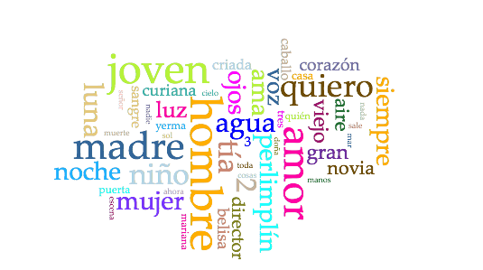
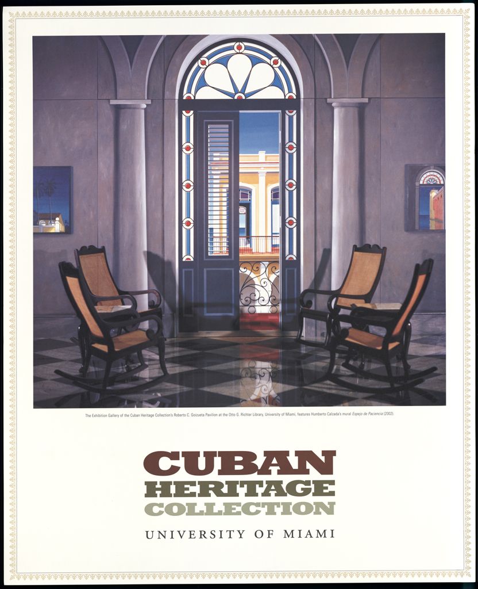
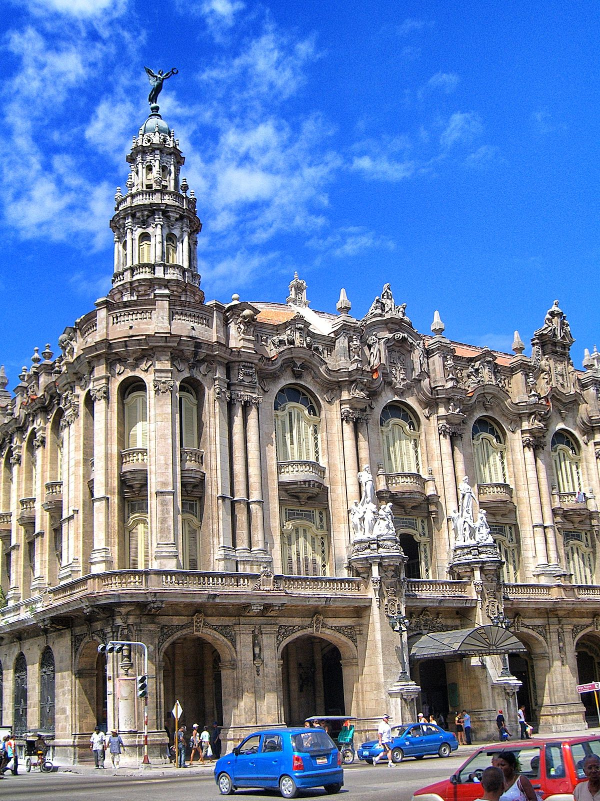
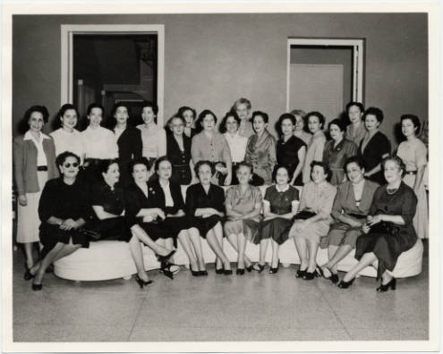

1. Descripción general
Durante este semestre de invierno 2017 el curso SPA322: Cultural Topics ha tenido como objetivo llevar a cabo un proyecto digital colaborativo centrado en la figura de Federico García Lorca y en la colección Federico García Lorca's Papers que alberga la biblioteca Richter sobre su estancia en Cuba. Para ello, el curso se ha dividido en seis temas destinados a completar nuestro proyecto: en primer lugar, nos hemos familiarizado con algunas tecnologías web (HTML, CSS) con el fin de idear e implementar un sitio web; paralelamente, nos hemos adentrado en la producción literaria de García Lorca a través de una serie de lecturas y también del análisis de textos con herramientas tales como AntConc, Voyant Tools, o RStudio. Hemos dedicado también esfuerzos a explorar la colección de la biblioteca Richter, así como a la reflexión sobre la edición de las cartas de Lorca allí presentes. Dos últimas secciones se han dedicado a la elaboración de una cronología y un mapa que recogen sus viajes transatlánticos. El objetivo del proyecto ha sido el de recuperar una serie de materiales recientemente adquiridos por la biblioteca de la Universidad de Miami que comprende fotografías de su estancia en la isla de Cuba, así como una serie de correspondencia intercambiada con José María Chacón, un intelectual cubano que trabajó como embajador en Madrid. El proyecto está compuesto por una cronología de Lorca que muestra sus viajes a Nueva York y La Habana, un mapa que detalla todos los lugares explorador por Lorca, una galería de fotografías tomadas en Cuba, y la edición digital de las cartas que había enviado con anterioridad a Chacón y Calvo durante su estancia en España. El propósito de este proyecto ha sido el de adoptar algunas metodologías procedentes de las humanidades digitales para concebir un espacio de exploración de una de las figuras más singulares de principios del siglo XX español.
2. La colección digital en Richter Library: Federico García Lorca's Papers
La colección Federico García Lorca's Papers se compone de treinta y siete documentos de los viajes de Lorca. La colección física está alojada con la Colección de la Herencia Cubana (CHC) en la Richter Library , y ha sido recientemente digitalizada. Hay dieciocho fotografías en blanco y negro, principalmente de Lorca con amigos como José María Chacón y Calvo. Además, hay ocho cartas de Lorca a Chacón y Calvo, nueve postales, y un telegrama. Los documentos de la colección registran la amistad de Federico García Lorca y José María Chacón y Calvo y comprenden los años del 1923 hasta el 1930. La mayoría de las fotografías se tomaron en la primavera de 1930, cuando Lorca viajó a Cuba invitado por la Institución Hispanocubana de Cultura. Aunque su visita solo duró unos tres meses (7 de marzo - 12 de junio), la experiencia le resultó crucial tanto para su vida como para su trabajo literario y creativo.
Falta sección: ¿Cómo llegó esta colección en UM?
3. Entre 1929 y 1930
En el año 1929 Federico García Lorca vivía en Madrid y atravesaba una crisis emocional provocada por lo que él percibió como su fracaso literario y por sus conflictos con su sexualidad que lo tenía sumido en una profunda depresión. También se sentía agobiado por la situación política de España lo que acrecentó su postura contra la dictadura de Primo de Rivera. Además para rematar, pasaba por aprietos económicos y recibía constantes reproches de sus padres, los cuales no veían ningún fruto de su trabajo.
Cabe destacar que sus obras más importantes escritas hasta ese momento como Canciones (1927) y El Primer Romancero Gitano (1928) habían recibido la primera un éxito crítico y la segunda un éxito popular, lo que dejaba mucho que desear para el ego del escritor que ambicionaba más. Lo que terminó de poner el dedo en la llaga, fue la dura crítica recibida por su gran amigo Salvador Dalí con respecto a su obra Romancero Gitano, catalogada como “poesía antigua y sin emociones” aparte de estar plagada de “costumbrismo y estereotipos.” Federico García Lorca (Wikipedia) Todos estos factores sumieron al escritor en una crisis emocional de la que necesitaba escapar. Así que estaba claro que Lorca necesitaba alejarse y desvincularse de todo aquel torbellino de sentimientos que lo arrastraban irremediablemente hacia el fracaso en todos los aspectos de su vida. Es por esto que la invitación de su antiguo maestro Fernando de los Ríos a visitar Nueva York le vino como el escape tan necesario en esos momentos. Además se le abrió la puerta a la oportunidad de aprender inglés, dar conferencias en universidades norteamericanas (por las que recibiría algún aporte monetario), y quizás una posibilidad de renovar su obra literaria encontrando inspiración en un nuevo y estimulante ambiente intelectual y cosmopolita, en ese momento decadente.
{kind=link}
 Lorca estuvo en Nueva York desde junio de 1929 hasta marzo de 1930. Según el poeta, su estancia en esta metrópolis se convirtió
en una de las experiencias más útiles de su vida. Cabe destacar que durante su estadía en esta gran ciudad, también visitó Vermont.
La llegada de Lorca a la ciudad de los rascacielos estuvo plagada de descubrimientos de una urbe llena de muchos aspectos negativos
que se ven plasmados en su obra Poeta en Nueva York , donde habla de
una sociedad deshumanizada, totalmente mecánica y fría e influenciada por un total materialismo exacerbado. Fue testigo de las
diferencias sociales y raciales tan marcadas en la sociedad neoyorquina. Hay que remarcar que su arribo coincidió con el
Crack del 1929 que llevó al
país a una depresión económica y a una gran crisis social. Fue fiel testigo del histerismo y la desesperación de la sociedad
norteamericana ante tal catástrofe.
Lorca estuvo en Nueva York desde junio de 1929 hasta marzo de 1930. Según el poeta, su estancia en esta metrópolis se convirtió
en una de las experiencias más útiles de su vida. Cabe destacar que durante su estadía en esta gran ciudad, también visitó Vermont.
La llegada de Lorca a la ciudad de los rascacielos estuvo plagada de descubrimientos de una urbe llena de muchos aspectos negativos
que se ven plasmados en su obra Poeta en Nueva York , donde habla de
una sociedad deshumanizada, totalmente mecánica y fría e influenciada por un total materialismo exacerbado. Fue testigo de las
diferencias sociales y raciales tan marcadas en la sociedad neoyorquina. Hay que remarcar que su arribo coincidió con el
Crack del 1929 que llevó al
país a una depresión económica y a una gran crisis social. Fue fiel testigo del histerismo y la desesperación de la sociedad
norteamericana ante tal catástrofe.
{kind=link}
Esta metrópolis norteamericana también lo impactó negativamente al punto de sentir aversión hacia el capitalismo y la industrialización hacia la sociedad moderna y se acrecentó su repudio por el maltrato hacia las minorías, y en especial hacia los negros, del que fue testigo durante sus visitas a Harlem. Todas estas experiencias y su estado anímico se ven reflejados en su gran obra Poeta en Nueva York, donde esta ciudad llena de complejidad queda plasmada desde las impresiones y experiencias vividas por el mismo Lorca. De hecho, leer Poeta en Nueva York es como disfrutar de un cuadro de la sociedad neoyorquina de aquella época.
4. La estancia de García Lorca en Cuba
Federico García Lorca se encuentra con el cubano Fernando Ortiz , presidente de la Institución Hispanoamericano de Cultura, en Nueva York y lo invita a dar una serie de conferencias en Cuba. Lorca acepta y sale de Nueva York en tren por la costa este americana hasta Tampa, Florida. Desde Key West se embarca en el ferry “Cuba” y llega a La Habana el 7 de marzo de 1930.
A llegar a La Habana, el mismo Lorca cuenta: “Cuando me encontré frente al Morro sentí una gran emoción y una alegría tan grande que tiré los guantes y la gabardina al suelo... Es muy andaluz esto de tirar algo o romper alguna cosa, una botella, un vaso cuando a uno le alegra algo" (Ripoll 2007: 19). En La Habana, lo esperaban en el muelle un grupo de intelectuales: Chacón y Calvo, Félix Lizaso, Juan Marinello, y Rafael Suárez Solís. Lorca se alojó en el Hotel Unión y un poco después de su llegada empezó a dictar conferencias en La Habana.
El 9 de marzo de 1930, dictó la primera de sus cinco conferencias, “La Mecánica de la Poesía” en el Teatro Principal de La Habana. Esta fue la conferencia más numerosa de su vida. Unos días después, dicta "Paraíso Cerrado para Muchos, Jardines Abiertos para Pocos”, un poema gongorino del siglo XVII (sobre Pedro Soto de Rojas). También dicta las conferencias “Canciones de Cuna españolas” y “La Imagen Poética de Don Luis de Góngora” en el Teatro Principal de La Habana . El 5 de abril de 1930, dicta una conferencia en la sociedad femenina Lyceum Lawn Tennis Club donde toma té con las damas distinguidas de La Habana, las cuales Lorca califica como las mujeres mas hermosas del mundo.
Después de sus conferencias, Lorca explora la isla y repite sus conferencias y recitales de su poesía en otras ciudades. Algunas ciudades que visita son Santiago de Cuba, Matanzas, y Cienfuegos. En las cartas a sus padres, Lorca expresa su amor por la isla. Por ejemplo, en una carta expresa “Si yo me pierdo, que me busquen en Andalucía o en Cuba” (Ripoll 2007: 21). También habla de la personalidad encantadora que tienen los cubanos y compara Cuba con Málaga y Cádiz.
En Matanzas, Lorca toma una foto con tres niños. En una carta a Chacón, Lorca expresa que se sentía “desgraciadamente menos golfo y menos elegante que ellos” (Ripoll 2007: 42). También en el valle Yumurí, conoce a dos niños negros, Lydia y Orlando. Lorca expresa que lo más bello de toda la isla son los niños negros. Es evidente que la cultura Afro-Cubana tuvo una influencia sobre Lorca. Lorca conoce la religión de la santería y música como la rumba y el son.
A través de las experiencias que tuvo Lorca en Cuba, explican sus biógrafos, que empezó a sentirse más libre, lo cual podría haber tenido una influencia en su obra “El Público” donde se defiende el tema del derecho de los homosexuales a vivir sus vidas abiertamente.
5. El proyecto digital: secciones y contenidos
La página de bienvenida de nuestro sitio web está presidida por una de las fotografías de la colección Federico García Lorca's Papers de la Richter Library. En la parte superior de la página aparece el menú principal, dividido en seis secciones: Proyecto, Cronología, Viajes, Galería, y Cartas. “Proyecto” recoge una descripción del proceso de nuestro análisis desde el comienzo del semestre hasta el final, una breve explicación de lo que consiste cada sección del sitio web, y una contextualización de los materiales utilizados para nuestro proyecto.
La segunda sección es la cronología del viaje de Federico García Lorca y la estancia en Nueva York y en la Habana, realizada con la aplicación web TimeLineJS. El objetivo de esta sección ha sido el de crear una biografía general sobre su vida, para que los usuarios del sitio web entiendan su vida desde una perspectiva temporal, así como recoger al detalle sus vicisitudes en tierras transatlánticas. La siguiente sección consiste en un mapa creado con la aplicación StoryMapJS. Aquí se describen sus viajes, su recorrido desde Granada hasta la Habana. Este mapa complementa la cronología, dando importancia sólo a los sitios visitados por Lorca. Se permite así tener una visualización gráfica de su viaje, en lugar de solo una línea de tiempo.
La tercera sección la constituye una galería de imágenes que recoge las fotografías presentes en la colección de la biblioteca Richter, para facilitar la visualización en un formato de álbum fotográfico.
La cuarta sección consiste en la edición y el análisis de sus postales y las cartas enviadas por García Lorca a José María Calvo Chacón. Estos documentos se han codificado con el lenguaje XML (eXtensible Markup Language), a partir de las guías directrices de la Text Encoding Initiative. En esta sección, se asoma la figura de Lorca desde una perspectiva más humana, mostrando sus sentimientos con sus propias palabras.
En fin, una última sección recoge la bibliografía utilizada para llevar a cabo nuestro proyecto, así como una lista de recursos útiles para el estudio de García Lorca.
En la parte inferior de la página, aparecen los créditos con los estudiantes que han participado en el proyecto, así como una breve cita sobre el progreso de este proyecto y su resultado final.
6.Las tecnologías utilizadas
Nuestro proyecto se divide en seis secciones. "Proyecto" que incluye una primera descripción y contextualización del proyecto, la "Cronología", los "Viajes" transatlánticos, la "Galería" de imágenes, la edición de las "Cartas" y una "Bibliografía".
La página web se ha construido con una plantilla de Bootstrap, The Big Picture que hemos ido personalizando y adaptando a nuestras necesidades. Para codificar las páginas y colaborar con toda la clase hemos utilizado Google Drive, de manera que todos tuviéramos acceso siempre a la última versión de nuestro sitio.
Para llevar a cabo la cronología hemos utilizado el programa TimelineJS, una herramienta de fácil aprendizaje. Esta aplicación se basa en una plantilla en forma de hoja de cálculo (Google Sheets), donde se añaden los momentos cronológicos clave. Además permite añadir imágenes en línea, y un breve texto. Se trata de un buen instrumento para visualizar un ciclo de vida, en este caso la historia cronológica de Lorca durante su viaje a Nueva York y Cuba. Un problema que hemos encontrado es que no es fácil visualizar toda la cronología en una pantalla, pero es muy útil y nos permite disfrutar de la historia de cualquier persona de una manera amena y fácil.
Para el mapa, se ha utilizado StoryMapJS, una aplicación web que permite crear mapas interactivos. StoryMapJS, a diferencia de TimelineJS, no funciona a partir de una hoja de cálculo o spreadsheet, donde pueden colaborar diferentes personas, sino que los datos se ingresan directamente en su plataforma. Para tener acceso, el usuario debe registrarse con su cuenta de Google, hecho que ha dificultado la colaboración entre los participantes. A pesar de esta limitación, es muy fácil de utilizar, localizar los puntos geográficos, y agregar las descripciones sobre los lugares que se han visitado. Este programa se está usando en nuestro proyecto para llevarnos de una manera virtual y precisa a todos los sitios que Lorca visitó, especialmente durante los años 1929 y 1930.
Para galería de fotografías, hemos utilizado el código Lightbox disponible en W3schools.com y los hemos integrado a nuestra plantilla de Bootstrap.
Para la edición de las cartas se ha llevado a cabo una codificación en XML (eXtensible Markup Language) siguiendo las líneas directrices de la Text Encoding Initiative. Para la codificación, hemos utilizado el programa Oxygen. Poner toda la información de las cartas en un formato XML-TEI no ha sido fácil y hemos tenido que afrontar múltiples problemas. En primer lugar, debe comprenderse en qué consiste una codificación semántica del texto, y entender el sistema de etiquetas y de anidación de estos elementos. La ventaja de utilizar XML-TEI es que se establece un sistema de búsqueda y de recuperación de la información a partir de las etiquetas utilizadas, como fechas, nombres de lugar o de personas, o incluso los saludos en una correspondencia. Otra ventaja es que la codificación XML-TEI es independiente al resultado web final. Los navegadores web interpretan sólo HTML, de manera que uno de los retos es el de transformar los documentos XML-TEI en HTML para que sean navegables en línea. Para ello, la profesora nos ha dado una plantilla de transformación en XSLT (eXtensible Stylesheet Language Transformation) que nos ha permitido transformar nuestro código XML-TEI en las diferentes cartas que aparecen en la sección correspondiente.
Las restantes secciones de nuestro sitio web, como Créditos o Bibliografía, son simples páginas estáticas web codificadas en HTML.